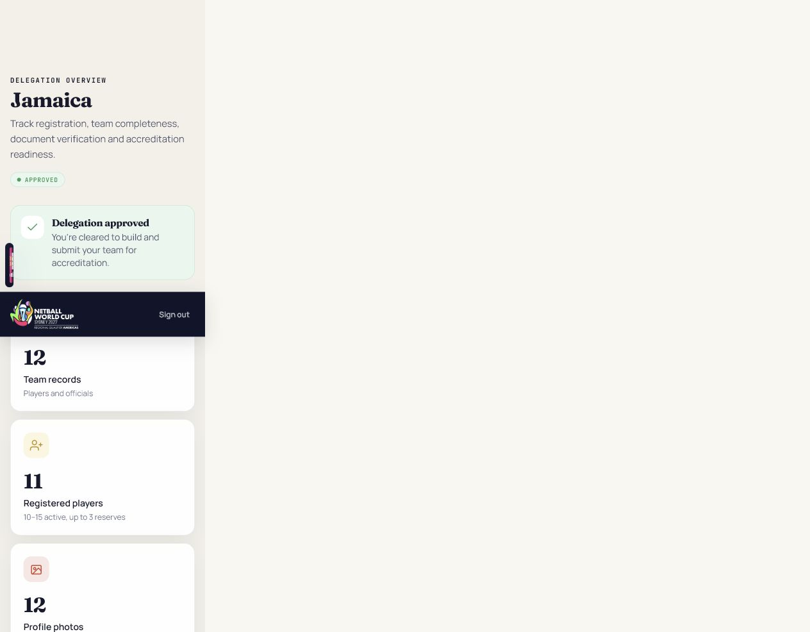
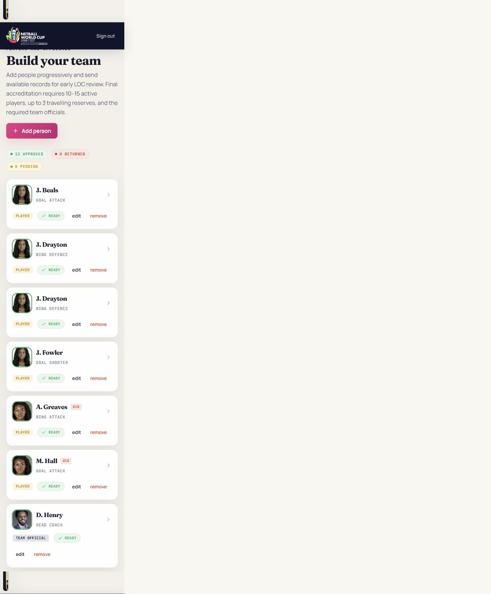

Your complete workflow
- Create the delegation account. One authorised Team Manager registers the association and becomes the delegation login.
- Wait for delegation approval. LOC approval unlocks the team-building workspace.
- Add people progressively. You do not need all players before saving or sending available records for early review.
- Complete each profile. Add accurate details, a 700-character biography, profile photo and required player evidence.
- Track LOC decisions. Correct returned records and monitor pending/approved people.
- Submit the completed team. Final accreditation occurs only after all configured requirements are met.
Find a task
Sign in and recover access
- Open the Team Portal and select Sign in.
- Enter the Team Manager email and password used during registration.
- Select Sign in. Do not repeatedly submit while the request is processing.
- If needed, use Forgot your password? and follow the emailed reset link.
Read your dashboard

| Navigation | Purpose |
|---|---|
| Dashboard | Overall progress and the next required task. |
| Team registration | Delegation and authorised contact details. |
| Players & officials | Add, edit, document and track every team member. |
| Match team sheets | Select the starting seven and bench for configured matches. |
| Submission status | Final readiness checks and submission to LOC. |
Register the team
- Select Register a delegation.
- Choose the represented country from the list; the three-letter code is stored automatically.
- Enter team, association and Team Manager details.
- Enter the password twice. Both values must match.
- Read and accept the data-processing acknowledgement, then submit.
Add and correct players or officials

- Select Add person.
- Choose the correct category. Player-only fields and rules appear only for players.
- Enter the registered name, nationality and required role/classification.
- For players, add DOB and a primary position. The primary position is informative and can change on match day.
- Write a biography of at least 700 characters. The counter shows progress.
- Add the photo and identity evidence required for a player, then save.
Correcting information
Select edit, correct the fields and select Save details. Material changes or replacement evidence may return an approved person to Pending so LOC can review the updated record. This protects accuracy and the individual’s right to correction.
Photos, consent and identity documents
- Use a clear, recent profile photograph with the person’s face visible.
- For a player under 18 on the configured assessment date, enter authorised guardian consent.
- Select Passport information page or National ID and the issuing country.
- A passport expiry date is required and must remain valid through the tournament end date.
- A National ID may have no expiry; if an expiry is entered it must also remain valid through the event.
- Upload only JPEG, PNG or PDF evidence requested by the LOC.
After upload, wait for the success message and confirm the record says Received — awaiting LOC. Do not upload the same file repeatedly.
Understand status and colour
| Status | Meaning | Your action |
|---|---|---|
| Incomplete / Returned | Required data is missing or LOC requested correction. | Open, correct and resubmit the affected record. |
| Pending / Awaiting LOC | Your available information was received and awaits review. | No duplicate submission; monitor for a decision. |
| Approved / Ready | The current version passed LOC person review. | No action unless information changes. |
Click the Approved, Returned or Pending pills to filter the list. Click the active pill again—or Show all—to restore everyone.
Submit available records and finalise the team
Use rolling submission to send available complete people early. Final submission requires the configured number of players, allowed reserves, required officials, bench allocation, biographies, photographs, DOB/consent and verified player identities.
Prepare a match team sheet
- Open Match team sheets and select a scheduled fixture.
- Assign one current LOC-approved player to each of the seven court positions.
- Select up to the permitted number of bench players.
- Review for duplicates and submit before the operational deadline.
Dropdowns show player names only. A player’s registered primary position does not lock the coach’s match-day assignment. If the list is blank, the page explains that no current LOC-approved players are eligible.
Privacy, accuracy and safe use
Select Data handling & privacy notice in the portal footer for the complete notice. Team Managers must keep information accurate, upload only necessary evidence, protect credentials and correct returned records. Each delegation can access only its own information.
Troubleshooting
| Problem | Action |
|---|---|
| Failed to fetch | Check connectivity, refresh once and report the time and action if it persists. |
| Save button unavailable | Check required fields, 700-character biography, file selection and document expiry. |
| Photo/document missing after upload | Look for the success message, refresh once, then report the person and time—do not repeatedly upload. |
| Approved person changed to Pending | A material correction or new evidence requires a fresh LOC review. |
| No players on match sheet | Confirm the players have current individual LOC approval. |
Support: loc@netballamericas.org